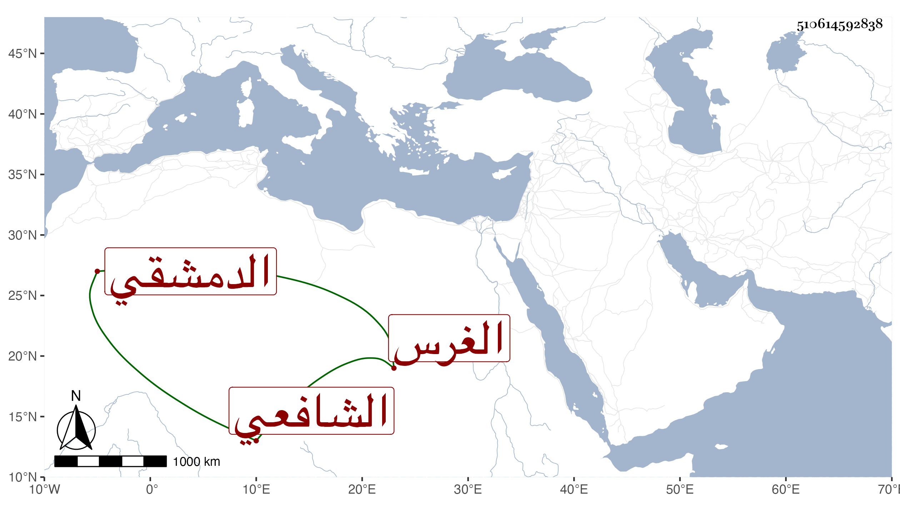

0902Sakhawi.DawLamic.ITO20230111-ara1.EIS1600.510614592838
Biography ID: 510614592838
773
خليل الغرس الكناوي نسبة لكفر كنا الدمشقي الشافعي أظنه المعروف باللدي فإن يكنه فقد ولي مشيخة الاقراء بجامع بني أمية بعد الزين خطاب وكذا بدار الحديث الأشرفية وأم بمقصورة الجامع نيابة وتلقي ذلك عنه بعد موته الشهاب الرملي وكان قد أخذ العشر عن الشمس بن النجار ولازمه وشرح قصيدة ابن الجزري في التجويد وأكثر الاشتغال في المعقولات حتى برع فيها وأقرأ الطلبة .
